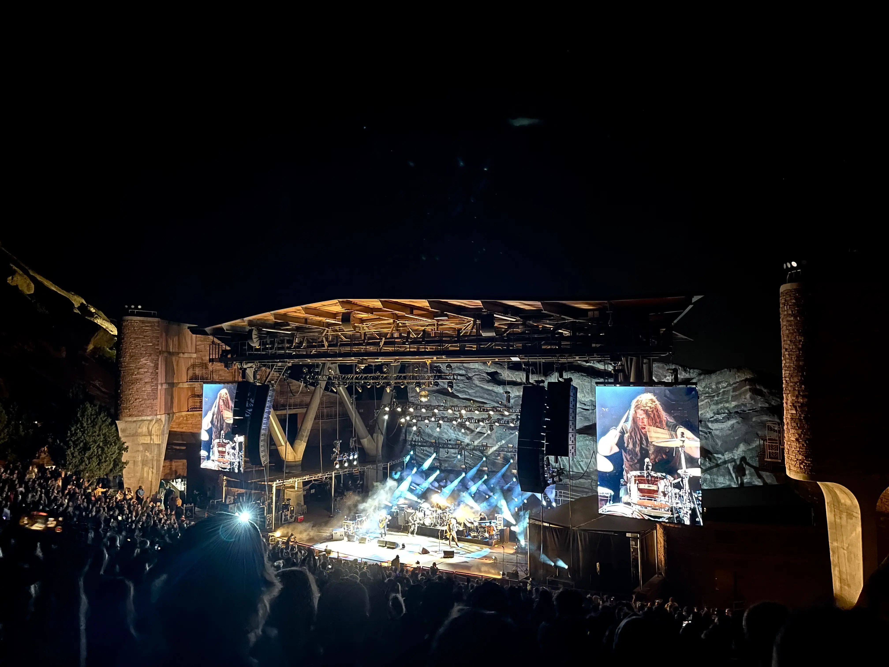

Intro: “Dancefloors” — Patrick Hallahan with My Morning Jacket
Posted on August 4, 2022
I’m not really sure what to call this kind of post. The impetus behind it is twofold.
First, I just saw MMJ at Red Rocks the other week:
Second, I’ve always thought this song has a bit of a disorienting intro, and who doesn’t love a disorienting intro?
I wouldn’t really call this a transcription since I’m not trying to pick apart note–for–note subtleties in the drum part. I’m also not using it as inspiration for coming up with a groove. It’s more of a songwriting thing — figuring out why the first four bars have such a weird lope to them.
So I’ll call this an “intro” since there’s a chance I’ll make more posts of this sort.
The first couple of times I heard this song, I thought there was a bar of 7/8 right before the verse starts. But here’s a good rule of thumb: if there seems to be a time signature change during the first couple of measures in a tune, odds are there’s no time signature change — your counting is just starting in the wrong spot.
What makes this intro so discombobulating is the crash cymbal that’s on the “+” after 1; it sounds like this crash should be the downbeat, which would give us some syncopated backbeats. But if you push everything forward so the snare hits are on 2 and 4, you can count the entire thing in common time with a two–beat pick–up.
Having the phrase start on the “+” after 1 isn’t a crazy idea on paper, but in practice, it really throws you for a loop. It’s also worth pointing out how the lead guitar’s melody starts on beat 2. Fun stuff.
“Dancefloors” on Songwhip.
Tags: 2022 • Intro • My Morning Jacket • Patrick Hallahan